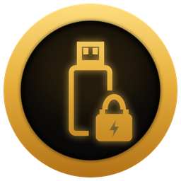
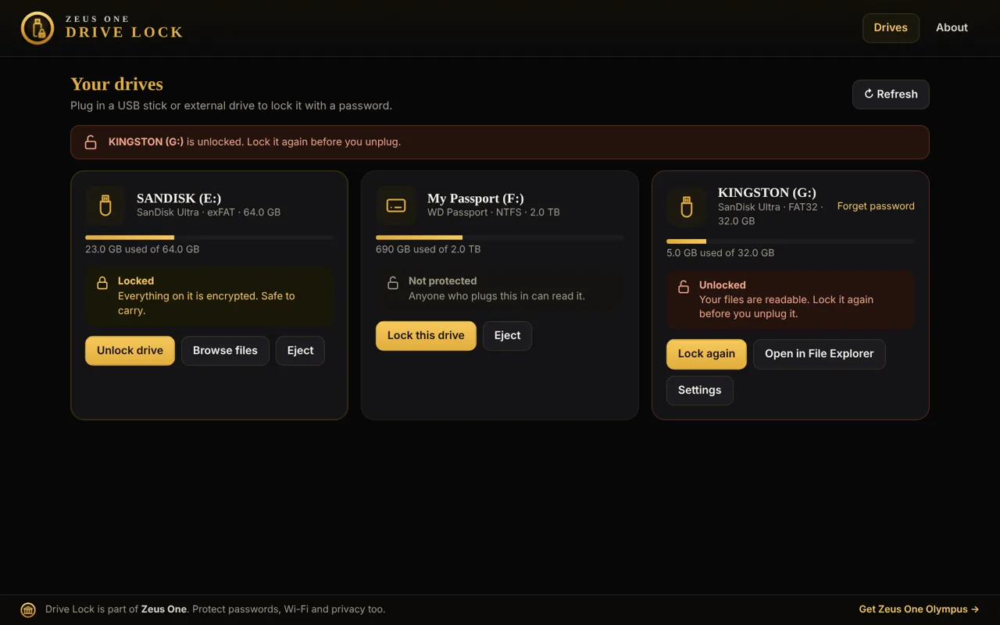
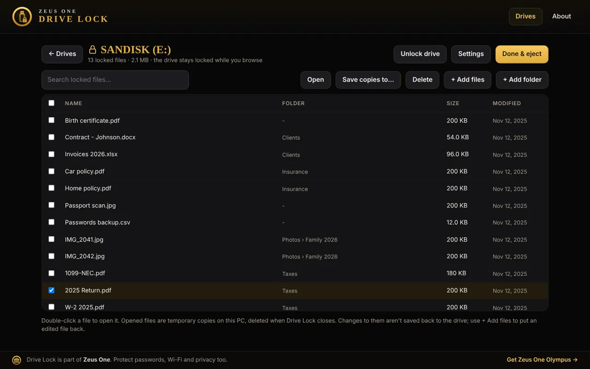

ZEUS ONE
ZEUS ONE

Lose the USB stick,
not your privacy.
Zeus One Drive Lock password-protects USB sticks, memory cards and external hard drives on Windows 10 and 11, including Windows Home, which doesn't come with BitLocker.
Get it on the Microsoft Store
How it works
It appears in Drive Lock by itself: USB sticks, SD cards and USB hard drives.
Drive Lock encrypts every file, and every file name, with AES-256. Save your Recovery Key in case you forget it.
Without the password the drive is unreadable. On any Windows PC, Drive Lock is free to unlock it.
Browse the locked files, open one, save a copy, or add new files, all while the drive stays locked.

Built not to lose your files
Every file is fully encrypted and checked before the original is removed. If the drive is pulled out or the power goes off mid-way, nothing is lost: Drive Lock picks up where it stopped. Tampering with a locked file is detected when it's opened.
Encryption: AES-256-GCM, with each file sealed under its own key. Passwords: stretched with Argon2id (256 MB of memory per guess), so guessing is extremely slow. Nobody else has a key: not Zeus One, not Microsoft. If you lose both the password and the Recovery Key, the files can't be recovered by anyone.
Zeus One Olympus has 23 security and privacy tools in one app: password vault, scam checker, breach alerts, Wi-Fi guard, firewall and more. Free to start, Pro $29.99 once.
See Olympus →
Privacy policy
Effective November 22, 2026 · ProfitHarbor AI LLC ("we"), maker of Zeus One Drive Lock ("the app").
The short version: the app doesn't collect anything. Your files, passwords and keys never leave your PC.
| When | What leaves your PC | Sent to |
|---|---|---|
| The app checks or restores your Drive Lock Pro purchase | The standard licence check Windows performs for Microsoft Store apps. | Microsoft Store |
| You click a link in the app (such as this page or Olympus) | Your browser or the Microsoft Store opens that page as normal. | That website or the Microsoft Store |
Nothing else. Drive Lock doesn't use the internet for locking, unlocking or browsing drives.
What the app stores
On your PC: a small settings file (your on/off choices and a protected record of your Pro purchase, so the app works offline). Passwords and keys are kept in memory only while the app is open, and are never saved. Files you open from a locked drive are temporary copies, deleted when the app closes.
On your drive: the encrypted files, an encrypted key file (DriveLock.zdl) and a short note explaining how to unlock the drive.
What we collect
Nothing. We never receive your files, file names, passwords, Recovery Keys or any usage data. We can't open your drives or reset your password. Purchases are handled by Microsoft under its own privacy terms. If you email us, we use your email only to reply.
Children
The app doesn't collect personal information from anyone, including children under 13.
Changes and contact
If this policy changes, we'll update this page and its date. Questions: support@profitharborai.com
© 2026 ProfitHarbor AI LLC · Zeus One Olympus · Scam Check · Help · Internet Watchdog · Subscription Finder · Debt Payoff Planner